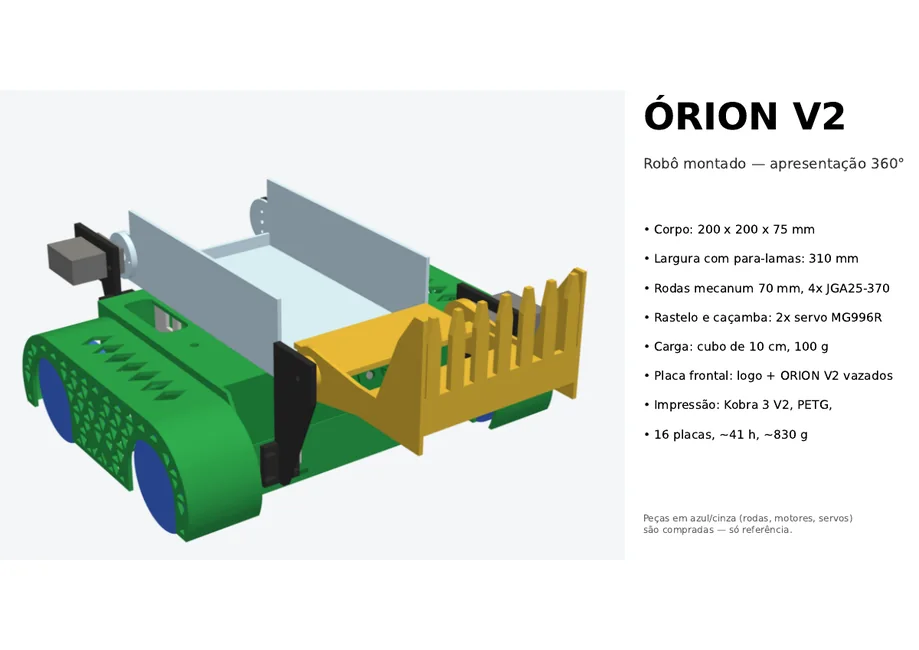

PROJETO · MONTAGEM · CONTROLE
Por dentro do Órion V2.
Uma área de consulta para conhecer o robô, entender a montagem e acompanhar como o controle e o código trabalham juntos.
MATERIAIS TÉCNICOS
Escolha por onde começar
Os documentos completos abrem em uma nova guia ou podem ser baixados.
O firmware documentado é específico para ESP32-S3 e indica Arduino-ESP32 Core 2.x e Bluepad32. Consulte o guia antes de alterar ou carregar o código.